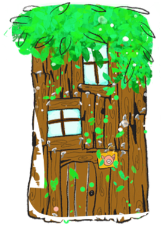
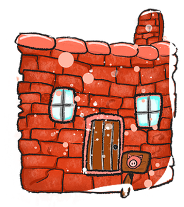

Había una vez tres hermanos cerditos que vivían en el bosque. Como el malvado lobo siempre los estaba persiguiendo para comérselos dijo un día el mayor:
- Tenemos que hacer una casa para protegernos de lobo. Así podremos escondernos dentro de ella cada vez que el lobo aparezca por aquí.
A los otros dos les pareció muy buena idea, pero no se ponían de acuerdo respecto a qué material utilizar. Al final, y para no discutir, decidieron que cada uno la hiciera de lo que quisiese.
El más pequeño optó por utilizar paja, para no tardar mucho y poder irse a jugar después
El mediano prefirió construirla de madera, que era más resistente que la paja y tampoco le llevaría mucho tiempo hacerla.
Pero el mayor pensó que aunque tardara más que sus hermanos, lo mejor era hacer una casa resistente y fuerte con ladrillos. - Además así podré hacer una chimenea con la que calentarme en invierno, pensó el cerdito.
Cuando los tres acabaron sus casas se metieron cada uno en la suya y entonces apareció por ahí el malvado lobo.
Se dirigió a la de paja y llamó a la puerta:
- Anda cerdito se bueno y déjame entrar...
- ¡No! ¡Eso ni pensarlo!
- ¡Pues soplaré y soplaré y la casita derribaré!
Y el lobo empezó a soplar y a estornudar, la débil casa acabó viniéndose abajo.
Pero el cerdito echó a correr y se refugió en la casa de su hermano mediano, que estaba hecha de madera.
- Anda cerditos sed buenos y dejarme entrar...
- ¡No! ¡Eso ni pensarlo!, dijeron los dos
- ¡Pues soplaré y soplaré y la casita derribaré!
El lobo empezó a soplar y a estornudar y aunque esta vez tuvo que hacer más esfuerzos para derribar la casa,
al final la madera acabó cediendo y los cerditos salieron corriendo en dirección hacia la casa de su hermano mayor.
El lobo estaba cada vez más hambriento así que sopló y sopló con todas sus fuerzas, pero esta vez no tenía nada que hacer porque la casa no se movía ni siquiera un poco.
Dentro los cerditos celebraban la resistencia de la casa de su hermano y cantaban alegres por haberse librado del lobo: